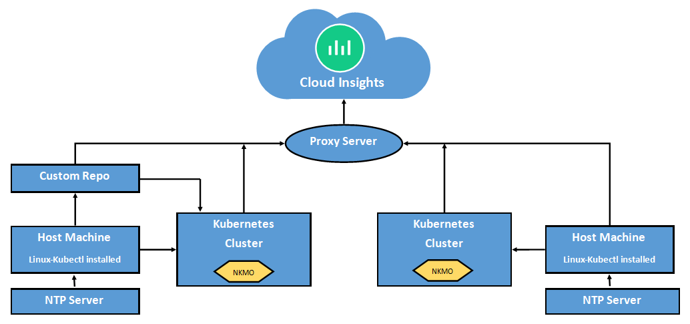

Richiedi modifiche alla documentazione
Richiedi modifiche alla documentazione Modifica questa pagina
Modifica questa pagina Scopri come collaborare
Scopri come collaborareConfigurazione di NetApp Kubernetes Monitoring Operator
Collaboratori
- Prima di installare NetApp Kubernetes Monitoring Operator
- Annotarli prima di iniziare
- Configurazione dell’operatore
- Installazione di NetApp Kubernetes Monitoring Operator
- Aggiornamento in corso
- Arresto e avvio di NetApp Kubernetes Monitoring Operator
- Disinstallazione in corso
- A proposito di Kube-state-metrics
- Verifica dei checksum di Kubernetes
- Risoluzione dei problemi
Cloud Insights utilizza una serie di componenti, tra cui "Bit fluente" e. "Telefono", Per la raccolta di dati Kubernetes. Telegraf è un agente server basato su plug-in che può essere utilizzato per raccogliere e generare report su metriche, eventi e registri. I plug-in di input vengono utilizzati per raccogliere le informazioni desiderate nell’agente accedendo direttamente al sistema/sistema operativo, chiamando API di terze parti o ascoltando flussi configurati (ad esempio Kafka, statsD, ecc.). I plug-in di output vengono utilizzati per inviare metriche, eventi e registri raccolti dall’agente a Cloud Insights.
Cloud Insights offre la raccolta * NetApp Kubernetes Monitoring Operator* (NKMO) per Kubernetes. Quando si aggiunge un data collector, è sufficiente selezionare la sezione Kubernetes.

Di seguito è riportata un’illustrazione di alto livello che mostra la posizione dell’operatore nell’ambiente in uso. A seconda dell’ambiente in uso, Proxy Server potrebbe essere richiesto o meno.

L’operatore (NKMO) e i data collezioner vengono scaricati dal Registro di sistema di Cloud Insights. Una volta installato, NKMO gestisce quindi tutti i collettori compatibili con gli operatori implementati nei nodi del cluster Kubernetes per acquisire i dati, inclusa la gestione del ciclo di vita di tali collettori. In seguito a questa catena, i dati vengono acquisiti dai collettori e inviati a Cloud Insights.
Prima di installare NetApp Kubernetes Monitoring Operator
-
Se si utilizza un repository di docker privato o personalizzato, seguire le istruzioni nella sezione utilizzo di un repository di docker privato o personalizzato
-
L’installazione di NetApp Kubernetes Monitoring Operator è supportata con Kubernetes versione 1.20 o successiva.
-
Quando Cloud Insights sta monitorando lo storage back-end e Kubernetes viene utilizzato con il runtime del container Docker, Cloud Insights può visualizzare le mappature e le metriche pod-to-PV-to-storage per NFS e iSCSI; altre runtime mostrano solo NFS.
-
A partire da agosto 2022, NetApp Kubernetes Monitoring Operator include il supporto per Pod Security Policy (PSP). Se il tuo ambiente utilizza PSP, devi eseguire l’aggiornamento all’ultimo NetApp Kubernetes Monitoring Operator.
-
Se si utilizza OpenShift 4.6 o versione successiva, è necessario seguire le istruzioni di OpenShift riportate di seguito oltre a garantire che questi prerequisiti siano soddisfatti.
-
Il monitoraggio viene installato solo sui nodi Linux Cloud Insights supporta il monitoraggio dei nodi Kubernetes che eseguono Linux, specificando un selettore di nodi Kubernetes che cerca le seguenti etichette Kubernetes su queste piattaforme:
Piattaforma |
Etichetta |
Kubernetes v1.20 e versioni successive |
Kubernetes.io/os = linux |
Rancher + Cattle.io come piattaforma di orchestrazione/Kubernetes |
cattle.io/os = linux |
-
NetApp Kubernetes Monitoring Operator e le relative dipendenze (telegraf, kube-state-metrics, fluentbit, ecc.) non sono supportate sui nodi che eseguono l’architettura Arm64.
-
Devono essere disponibili i seguenti comandi: Curl, kubectl. Il comando docker è necessario per una fase di installazione opzionale. Per ottenere risultati ottimali, aggiungere questi comandi al PERCORSO. Si noti che kubectl deve essere configurato con accesso minimo ai seguenti oggetti kubernetes: Agenti, clusterrolebinding, customresourcedefinizioni, implementazioni, namespace, ruoli, associazioni di ruoli, segreti, serviceaccounts, e servizi. Vedere qui per un file .yaml di esempio con questi privilegi minimi di ruolo del clusterrole.
-
L’host da utilizzare per l’installazione dell’operatore di monitoraggio Kubernetes di NetApp deve avere kubectl configurato per comunicare con il cluster K8s di destinazione e disporre di connettività Internet all’ambiente Cloud Insights.
-
Se si utilizza un proxy durante l’installazione o quando si utilizza il cluster K8s da monitorare, seguire le istruzioni nella sezione Configurazione del supporto proxy.
-
NetApp Kubernetes Monitoring Operator installa le proprie metriche di stato kube per evitare conflitti con altre istanze. Per un controllo accurato e la creazione di report dei dati, si consiglia di sincronizzare l’ora sul computer dell’agente utilizzando il protocollo NTP (Network Time Protocol) o SNTP (Simple Network Time Protocol).
-
Se si sta ridistribuendo l’operatore (ovvero si sta aggiornando o sostituendo), non è necessario creare un token API new; è possibile riutilizzare il token precedente.
-
Si noti inoltre che se si dispone di un recente NetApp Kubernetes Monitoring Operator installato e si utilizza un token di accesso API rinnovabile, i token in scadenza verranno sostituiti automaticamente da token di accesso API nuovi/aggiornati.
Annotarli prima di iniziare
Se si utilizza un proxy, hanno un repository personalizzato, o stanno utilizzando OpenShift, leggere attentamente le seguenti sezioni.
Se si sta eseguendo l’aggiornamento da un’installazione precedente, leggere anche la Aggiornamento in corso informazioni.
Configurazione dell’operatore
Nelle versioni più recenti dell’operatore, le impostazioni modificate più comunemente possono essere configurate nella risorsa personalizzata AgentConfiguration. È possibile modificare questa risorsa prima di implementare l’operatore modificando il file operator-config.yaml. Questo file include esempi commentati di alcune impostazioni. Vedere l’elenco di "impostazioni disponibili" per la versione più recente dell’operatore.
È inoltre possibile modificare questa risorsa dopo che l’operatore è stato distribuito utilizzando il seguente comando:
kubectl -n netapp-monitoring edit AgentConfiguration Per determinare se la versione implementata dell'operatore supporta AgentConfiguration, eseguire il seguente comando:
kubectl get crd agentconfigurations.monitoring.netapp.com Se viene visualizzato il messaggio "Error from server (notfound)" (errore dal server (non trovato)), l'operatore deve essere aggiornato prima di poter utilizzare AgentConfiguration.
Configurazione del supporto proxy
Per installare NetApp Kubernetes Monitoring Operator, è possibile utilizzare un proxy nel proprio ambiente in due punti. Questi possono essere sistemi proxy identici o separati:
-
Proxy necessario durante l’esecuzione del frammento di codice di installazione (utilizzando "curl") per connettere il sistema in cui viene eseguito il frammento all’ambiente Cloud Insights
-
Proxy necessario dal cluster Kubernetes di destinazione per comunicare con l’ambiente Cloud Insights
Se si utilizza un proxy per uno o entrambi questi, per installare il monitor operativo di NetApp Kubernetes è necessario prima assicurarsi che il proxy sia configurato per consentire una buona comunicazione con l’ambiente Cloud Insights. Se si dispone di un proxy e si può accedere a Cloud Insights dal server/VM da cui si desidera installare l’operatore, è probabile che il proxy sia configurato correttamente.
Per il proxy utilizzato per installare NetApp Kubernetes Operating Monitor, prima di installare l’operatore, impostare le variabili di ambiente http_proxy/https_proxy. Per alcuni ambienti proxy, potrebbe essere necessario impostare la variabile no_proxy environment.
Per impostare le variabili, eseguire le seguenti operazioni sul sistema prima dell’installazione di NetApp Kubernetes Monitoring Operator:
-
Impostare le variabili di ambiente https_proxy e/o http_proxy per l’utente corrente:
-
Se il proxy da configurare non dispone dell’autenticazione (nome utente/password), eseguire il seguente comando:
export https_proxy=<proxy_server>:<proxy_port> .. Se il proxy da configurare dispone dell'autenticazione (nome utente/password), eseguire questo comando:
export http_proxy=<proxy_username>:<proxy_password>@<proxy_server>:<proxy_port>
-
Per il proxy utilizzato per la comunicazione del cluster Kubernetes con l’ambiente Cloud Insights, installare l’operatore di monitoraggio Kubernetes dopo aver letto tutte le istruzioni.
Configurare la sezione proxy di AgentConfiguration in operator-config.yaml prima di implementare NetApp Kubernetes Monitoring Operator.
agent:
...
proxy:
server: <server for proxy>
port: <port for proxy>
username: <username for proxy>
password: <password for proxy>
# In the noproxy section, enter a comma-separated list of
# IP addresses and/or resolvable hostnames that should bypass
# the proxy
noproxy: <comma separated list>
isTelegrafProxyEnabled: true
isFluentbitProxyEnabled: <true or false> # true if Events Log enabled
isCollectorsProxyEnabled: <true or false> # true if Network Performance and Map enabled
isAuProxyEnabled: <true or false> # true if AU enabled
...
...
Utilizzando un repository di docker personalizzato o privato
Per impostazione predefinita, l’operatore di monitoraggio di NetApp Kubernetes estrarrà le immagini container dal repository Cloud Insights. Se si utilizza un cluster Kubernetes come destinazione per il monitoraggio e tale cluster è configurato in modo da estrarre solo immagini container da un repository Docker personalizzato o privato o da un registro container, è necessario configurare l’accesso ai container richiesti dall’operatore di monitoraggio NetApp Kubernetes.
Eseguire il frammento Image Pull dalla sezione di installazione di NetApp Monitoring Operator. Questo comando effettua l’accesso al repository Cloud Insights, inserisce tutte le dipendenze dell’immagine per l’operatore e si disconnette dal repository Cloud Insights. Quando richiesto, inserire la password temporanea del repository fornita. Questo comando scarica tutte le immagini utilizzate dall’operatore, incluse le funzioni opzionali. Vedere di seguito per quali funzioni vengono utilizzate queste immagini.
Funzionalità principale dell’operatore e monitoraggio Kubernetes
-
monitoraggio netapp
-
kube-rbac-proxy
-
kube-state-metrics
-
telefono
-
distroless-root-user
Registro eventi
-
fluente
-
kubernetes-event-exportent
Mappa e performance di rete
-
ci-net-osservatore
Trasferire l’immagine del gestore nel repository del supporto privato/locale/aziendale in base alle policy aziendali. Assicurarsi che i tag delle immagini e i percorsi delle directory per queste immagini nel repository siano coerenti con quelli nel repository Cloud Insights.
Modificare l’implementazione dell’operatore di monitoraggio in operator-deployment.yaml e modificare tutti i riferimenti alle immagini per utilizzare il repository Docker privato.
image: <docker repo of the enterprise/corp docker repo>/kube-rbac-proxy:<kube-rbac-proxy version> image: <docker repo of the enterprise/corp docker repo>/netapp-monitoring:<version>
Modificare la configurazione dell’agente in operator-config.yaml in modo che rifletta la nuova posizione del responsabile del docker. Crea un nuovo imagePullSecret per il tuo repository privato; per ulteriori dettagli, consulta https://kubernetes.io/docs/tasks/configure-pod-container/pull-image-private-registry/
agent: ... # An optional docker registry where you want docker images to be pulled from as compared to CI's docker registry # Please see documentation link here: https://docs.netapp.com/us-en/cloudinsights/task_config_telegraf_agent_k8s.html#using-a-custom-or-private-docker-repository dockerRepo: your.docker.repo/long/path/to/test # Optional: A docker image pull secret that maybe needed for your private docker registry dockerImagePullSecret: docker-secret-name
Istruzioni per OpenShift
Se si utilizza OpenShift 4.6 o versione successiva, è necessario modificare la configurazione dell’agente in operator-config.yaml per attivare l’impostazione runPrivileged:
# Set runPrivileged to true SELinux is enabled on your kubernetes nodes runPrivileged: true
OpenShift potrebbe implementare un ulteriore livello di sicurezza che potrebbe bloccare l’accesso ad alcuni componenti di Kubernetes.
Installazione di NetApp Kubernetes Monitoring Operator


-
Immettere un nome cluster e uno spazio dei nomi univoci. Se lo sei aggiornamento in corso Da un agente basato su script o da un precedente operatore Kubernetes, utilizzare lo stesso nome del cluster e lo stesso namespace.
-
Una volta immessi, è possibile copiare il frammento Download Command negli Appunti.
-
Incollare il frammento in una finestra bash ed eseguirlo. I file di installazione dell’operatore verranno scaricati. Tenere presente che il frammento ha una chiave univoca ed è valido per 24 ore.
-
Se si dispone di un repository personalizzato o privato, copiare il frammento Image Pull opzionale, incollarlo in una shell bash ed eseguirlo. Una volta estratte le immagini, copiarle nel repository privato. Assicurarsi di mantenere gli stessi tag e la stessa struttura di cartelle. Aggiornare i percorsi in operator-deployment.yaml e le impostazioni del repository di docker in operator-config.yaml.
-
Se lo si desidera, esaminare le opzioni di configurazione disponibili, ad esempio le impostazioni del proxy o del repository privato. Ulteriori informazioni su "opzioni di configurazione".
-
Quando sei pronto, implementa l’operatore copiando il frammento kubectl apply, scaricandolo ed eseguendolo.
-
L’installazione procede automaticamente. Una volta completata l’operazione, fare clic sul pulsante Avanti.
-
Al termine dell’installazione, fare clic sul pulsante Next. Assicurarsi inoltre di eliminare o memorizzare in modo sicuro il file operator-secrets.yaml.
Scopri di più configurazione del proxy.
Scopri di più utilizzando un repository di docker personalizzato/privato.
La raccolta dei log EMS di Kubernetes è attivata per impostazione predefinita quando si installa NetApp Kubernetes Monitoring Operator. Per disattivare questa raccolta dopo l’installazione, fare clic sul pulsante Modify Deployment (Modifica distribuzione) nella parte superiore della pagina dei dettagli del cluster Kubernetes e deselezionare "Log collection" (raccolta log).

Questa schermata mostra anche lo stato corrente della raccolta dei log. Di seguito sono riportati i possibili stati:
-
Disattivato
-
Attivato
-
Enabled (attivato) - Installazione in corso
-
Abilitato - non in linea
-
Abilitato - Online
-
Errore - le autorizzazioni della chiave API non sono sufficienti
Aggiornamento in corso

|
Se si dispone di un agente basato su script precedentemente installato, è necessario eseguire l’aggiornamento a NetApp Kubernetes Monitoring Operator. |
Aggiornamento da agente basato su script a NetApp Kubernetes Monitoring Operator
Per aggiornare telegraf Agent, procedere come segue:
-
Prendere nota del nome del cluster riconosciuto da Cloud Insights. È possibile visualizzare il nome del cluster eseguendo il seguente comando. Se lo spazio dei nomi non è quello predefinito (ci-monitoring), sostituire lo spazio dei nomi appropriato:
kubectl -n ci-monitoring get cm telegraf-conf -o jsonpath='{.data}' |grep "kubernetes_cluster =" -
Salvare il nome del cluster K8s da utilizzare durante l’installazione della soluzione di monitoraggio basata sull’operatore K8s per garantire la continuità dei dati.
Se non si ricorda il nome del cluster K8s in ci, è possibile estrarlo dalla configurazione salvata con la seguente riga di comando:
cat /tmp/telegraf-configs.yaml | grep kubernetes_cluster | head -2 . Rimuovere il monitoraggio basato su script
Per disinstallare l’agente basato su script su Kubernetes, procedere come segue:
Se lo spazio dei nomi di monitoraggio viene utilizzato esclusivamente per Telegraf:
kubectl --namespace ci-monitoring delete ds,rs,cm,sa,clusterrole,clusterrolebinding -l app=ci-telegraf
kubectl delete ns ci-monitoring
Se lo spazio dei nomi di monitoraggio viene utilizzato per altri scopi oltre a Telegraf:
kubectl --namespace ci-monitoring delete ds,rs,cm,sa,clusterrole,clusterrolebinding -l app=ci-telegraf . <<installing-the-netapp-kubernetes-monitoring-operator,Installare>> L'operatore corrente. Assicurarsi di utilizzare lo stesso nome del cluster indicato al punto 1 precedente.
Aggiornamento all’ultimo NetApp Kubernetes Monitoring Operator
Determinare se esiste una configurazione Agentcon l’operatore esistente (se lo spazio dei nomi non è il monitoraggio netapp predefinito, sostituire lo spazio dei nomi appropriato):
kubectl -n netapp-monitoring get agentconfiguration netapp-monitoring-configuration Se esiste una configurazione AgentConfiguration:
-
Installare L’operatore più recente rispetto all’operatore esistente.
-
Assicurati di sì estrarre le immagini container più recenti se si utilizza un repository personalizzato.
-
Se AgentConfiguration non esiste:
-
Prendere nota del nome del cluster riconosciuto da Cloud Insights (se lo spazio dei nomi non è il monitoraggio netapp predefinito, sostituire lo spazio dei nomi appropriato):
kubectl -n netapp-monitoring get agent -o jsonpath='{.items[0].spec.cluster-name}' * Creare un backup dell'operatore esistente (se lo spazio dei nomi non è il monitoraggio netapp predefinito, sostituire lo spazio dei nomi appropriato):kubectl -n netapp-monitoring get agent -o yaml > agent_backup.yaml * <<to-remove-the-netapp-kubernetes-monitoring-operator,Disinstallare>> L'operatore esistente. * <<installing-the-netapp-kubernetes-monitoring-operator,Installare>> L'operatore più recente.
-
Utilizzare lo stesso nome del cluster.
-
Dopo aver scaricato i file YAML dell’operatore più recenti, portare le personalizzazioni trovate in Agent_backup.yaml nell’operator-config.yaml scaricato prima di eseguire la distribuzione.
-
Assicurati di sì estrarre le immagini container più recenti se si utilizza un repository personalizzato.
-
Arresto e avvio di NetApp Kubernetes Monitoring Operator
Per arrestare NetApp Kubernetes Monitoring Operator:
kubectl -n netapp-monitoring scale deploy monitoring-operator --replicas=0 Per avviare NetApp Kubernetes Monitoring Operator:
kubectl -n netapp-monitoring scale deploy monitoring-operator --replicas=1
Disinstallazione in corso
|
|
Se si utilizza un agente Kubernetes basato su script precedentemente installato, è necessario eseguire l’upgrade Al NetApp Kubernetes Monitoring Operator. |
Per rimuovere l’agente obsoleto basato su script
Si noti che questi comandi utilizzano lo spazio dei nomi predefinito "ci-monitoring". Se è stato impostato uno spazio dei nomi personalizzato, sostituire tale spazio dei nomi in questi e in tutti i comandi e file successivi.
Per disinstallare l’agente basato su script su Kubernetes (ad esempio, quando si esegue l’aggiornamento a NetApp Kubernetes Monitoring Operator), procedere come segue:
Se lo spazio dei nomi di monitoraggio viene utilizzato esclusivamente per Telegraf:
kubectl --namespace ci-monitoring delete ds,rs,cm,sa,clusterrole,clusterrolebinding -l app=ci-telegraf kubectl delete ns ci-monitoring Se lo spazio dei nomi di monitoraggio viene utilizzato per altri scopi oltre a Telegraf:
kubectl --namespace ci-monitoring delete ds,rs,cm,sa,clusterrole,clusterrolebinding -l app=ci-telegraf
Per rimuovere NetApp Kubernetes Monitoring Operator
Si noti che lo spazio dei nomi predefinito per NetApp Kubernetes Monitoring Operator è "netapp-monitoring". Se è stato impostato uno spazio dei nomi personalizzato, sostituire tale spazio dei nomi in questi e in tutti i comandi e file successivi.
Le versioni più recenti dell’operatore di monitoraggio possono essere disinstallate con i seguenti comandi:
kubectl delete agent -A -l installed-by=nkmo-<name-space> kubectl delete ns,clusterrole,clusterrolebinding,crd -l installed-by=nkmo-<name-space>
Se il primo comando restituisce "Nessuna risorsa trovata", attenersi alle istruzioni riportate di seguito per disinstallare le versioni precedenti dell’operatore di monitoraggio.
Eseguire ciascuno dei seguenti comandi nell’ordine indicato. A seconda dell’installazione corrente, alcuni di questi comandi potrebbero restituire i messaggi ‘oggetto non trovato’. Questi messaggi possono essere ignorati in modo sicuro.
kubectl -n <NAMESPACE> delete agent agent-monitoring-netapp kubectl delete crd agents.monitoring.netapp.com kubectl -n <NAMESPACE> delete role agent-leader-election-role kubectl delete clusterrole agent-manager-role agent-proxy-role agent-metrics-reader <NAMESPACE>-agent-manager-role <NAMESPACE>-agent-proxy-role <NAMESPACE>-cluster-role-privileged kubectl delete clusterrolebinding agent-manager-rolebinding agent-proxy-rolebinding agent-cluster-admin-rolebinding <NAMESPACE>-agent-manager-rolebinding <NAMESPACE>-agent-proxy-rolebinding <NAMESPACE>-cluster-role-binding-privileged kubectl delete <NAMESPACE>-psp-nkmo kubectl delete ns <NAMESPACE>
Se in precedenza è stato creato manualmente un vincolo di contesto di protezione per un’installazione di Telegraf basata su script:
kubectl delete scc telegraf-hostaccess
A proposito di Kube-state-metrics
NetApp Kubernetes Monitoring Operator installa automaticamente le metriche dello stato kube, senza richiedere alcuna interazione da parte dell’utente.
Contatori di metriche di stato kube
Utilizzare i seguenti collegamenti per accedere alle informazioni relative ai contatori delle metriche di stato del kube:
Verifica dei checksum di Kubernetes
Il programma di installazione dell’agente Cloud Insights esegue controlli di integrità, ma alcuni utenti potrebbero voler eseguire le proprie verifiche prima di installare o applicare gli artefatti scaricati. Per eseguire un’operazione di solo download (invece del download e dell’installazione predefiniti), questi utenti possono modificare il comando di installazione dell’agente ottenuto dall’interfaccia utente e rimuovere l’opzione finale di "installazione".
Attenersi alla seguente procedura:
-
Copiare il frammento del programma di installazione dell’agente come indicato.
-
Invece di incollare il frammento in una finestra di comando, incollarlo in un editor di testo.
-
Rimuovere il file "--install" finale dal comando.
-
Copiare l’intero comando dall’editor di testo.
-
Incollarlo nella finestra di comando (in una directory di lavoro) ed eseguirlo.
-
Download e installazione (impostazione predefinita):
installerName=cloudinsights-kubernetes.sh … && sudo -E -H ./$installerName --download –-install ** Solo download:
installerName=cloudinsights-kubernetes.sh … && sudo -E -H ./$installerName --download
-
Il comando di solo download scaricherà tutti gli artefatti richiesti da Cloud Insights nella directory di lavoro. Gli artefatti includono, ma non possono essere limitati a:
-
uno script di installazione
-
un file di ambiente
-
File YAML
-
un file checksum firmato (sha256.signed)
-
Un file PEM (netapp_cert.pem) per la verifica della firma
Lo script di installazione, il file di ambiente e i file YAML possono essere verificati utilizzando l’ispezione visiva.
Il file PEM può essere verificato confermando che l’impronta digitale è la seguente:
1A918038E8E127BB5C87A202DF173B97A05B4996 In particolare,
openssl x509 -fingerprint -sha1 -noout -inform pem -in netapp_cert.pem Il file checksum firmato può essere verificato utilizzando il file PEM:
openssl smime -verify -in sha256.signed -CAfile netapp_cert.pem -purpose any Una volta verificati correttamente tutti gli artefatti, l'installazione dell'agente può essere avviata eseguendo:
sudo -E -H ./<installation_script_name> --install
Risoluzione dei problemi
Alcune cose da provare in caso di problemi durante la configurazione dell’operatore di monitoraggio di NetApp Kubernetes:
| Problema: | Prova: |
|---|---|
Non viene visualizzato un collegamento ipertestuale/connessione tra il volume persistente Kubernetes e il dispositivo di storage back-end corrispondente. Il volume persistente Kubernetes viene configurato utilizzando il nome host del server di storage. |
Seguire la procedura per disinstallare l’agente Telegraf esistente, quindi reinstallare l’agente Telegraf più recente. È necessario utilizzare Telegraf versione 2.0 o successiva e lo storage del cluster Kubernetes deve essere monitorato attivamente da Cloud Insights. |
I messaggi nei log sono simili ai seguenti: E0901 15:21:39.962145 1 Reflector.go:178] k8s.io/kube-state-metrics/internal/store/builder.go:352: Non è stato possibile elencare *v1.MutatingWebhookConfiguration: Il server non ha trovato la risorsa richiesta E0901 15 178:21 352:43.168161 1 Reflector.go.so the internal course to be reflector.i/kio-klist |
Questi messaggi possono verificarsi se si utilizza kube-state-metrics versione 2.0.0 o superiore con versioni di Kubernetes inferiori alla 1.20. Per ottenere la versione di Kubernetes: Kubectl version per ottenere la versione di kube-state-metrics: Kubectl get deploy/kube-state-metrics -o jsonpath='{..image}' per evitare che questi messaggi si verifichino, gli utenti possono modificare la loro implementazione di kube-state-metrics per disabilitare le seguenti Leases: _Mutatingwebcooki_argomenti_conserviI possono usare le configurazioni_convalide_construzione_web: Resources=certificatesigningrequests,configmaps,crontowjobs,demonset,implementazioni,endpoint,horizontalpodautoscaler,ingassets,proxims,proxims,proxims,proxims,proxims,proxims,proxims,proxims,proxims,proxims,proxims,proxims,proxims,proxims,proxims,proxims,proxims,proxims,proxims,proxims,proxims,proxims,proxims,proxims,proxims,proxims,proxims,proxims,proxims,proxims,proxims,proxims,proxims,proxims,proxims,proxims,proxims,proxims,proxims,proxims, validatingwebhookconfigurations,volumeattachments" |
Vedo messaggi di errore da Telegraf simili a quanto segue, ma Telegraf si avvia ed esegue: 11 14 ottobre:23:41 ip-172-31-39-47 systemd[1]: Ha avviato l’agente server basato su plug-in per la segnalazione delle metriche in InfluxDB. Ottobre 11 14:23:41 ip-172-31-39-47 telegraf[1827]: Time="2021-10-11T14:23:41Z" level=error msg="Impossibile creare la directory della cache. /etc/telegraf/.cache/snowflake, err: mkdir /etc/telegraf/.ca che: permesso negato. Ignored’n" func="gosnflake.(*defaultLogger).Errorf" file="log.go:120" ott 11 14:23:41 ip-172-31-39-47 telegraf[1827]: Time="2021-10-11T14:23:41Z" level=error msg="Impossibile aprire. Ignorato. Aprire /etc/telegraf/.cache/Snowflake/ocsp_Response_cache.json: Nessun file o directory di questo tipo. Func="gosnflake.(*defaultLogger).Errorf" file="log.go:120" ott 11 14:23:41 ip-172 1827 23-31 2021-39-47 10 t114z! Avvio di Telegraf 1.19.3 |
Si tratta di un problema noto. Fare riferimento a. "Questo articolo di GitHub" per ulteriori dettagli. Finché Telegraf è in funzione, gli utenti possono ignorare questi messaggi di errore. |
Su Kubernetes, i miei pod Telegraf riportano il seguente errore: "Errore nell’elaborazione delle informazioni sui mountstats: Impossibile aprire il file mountstats: /Hostfs/proc/1/mountstats, errore: Open /hostfs/proc/1/mountstats: Permesso negato" |
Se SELinux è abilitato e abilitato, probabilmente impedisce ai pod Telegraf di accedere al file /proc/1/mountstats sul nodo Kubernetes. Per superare questa restrizione, modificare la configurazione dell’agente e attivare l’impostazione runPrivileged. Per ulteriori informazioni, fare riferimento a: https://docs.netapp.com/us-en/cloudinsights/task_config_telegraf_agent_k8s.html#openshift-instructions. |
Su Kubernetes, il mio pod ReplicaSet Telegraf riporta il seguente errore: [inputs.prometheus] errore nel plugin: Impossibile caricare la coppia di chiavi /etc/kubernetes/pki/etcd/server.crt:/etc/kubernetes/pki/etcd/server.key: Aprire /etc/kubernetes/pki/etcd/server.no |
Il pod ReplicaSet di Telegraf è destinato all’esecuzione su un nodo designato come master o etcd. Se il pod ReplicaSet non è in esecuzione su uno di questi nodi, si otterranno questi errori. Verificare se i nodi master/etcd presentano delle contaminazioni. In tal caso, aggiungere le tolleranze necessarie a Telegraf ReplicaSet, telegraf-rs. Ad esempio, modificare il Replica Set… kubectl edita rs telegraf-rs …e aggiunga le tolleranze appropriate alla specifica. Quindi, riavviare il pod ReplicaSet. |
Ho un ambiente PSP/PSA. Questo influisce sul mio operatore di monitoraggio? |
Se il cluster Kubernetes è in esecuzione con Pod Security Policy (PSP) o Pod Security Admission (PSA), è necessario eseguire l’aggiornamento all’ultimo NetApp Kubernetes Monitoring Operator. Per eseguire l’aggiornamento al sistema NKMO con supporto per PSP/PSA, procedere come segue: 1. Disinstallare L’operatore di monitoraggio precedente: Kubectl delete Agent-monitoring-netapp -n netapp-monitoring kubectl delete ns netapp-monitoring kubectl delete crd agents.monitoring.netapp.com kubectl delete clusterrole Agent-manager-role Agent-proxy-role Agent-metrics-reader kubectl delete clusterrolebinding Agent-manager-binding Agent-proxy-rolebinding Agent-cluster-admin-role2. Installare la versione più recente dell’operatore di monitoraggio. |
Ho riscontrato problemi nel tentativo di implementare NKMO e ho utilizzato PSP/PSA. |
1. Modificare l’agente utilizzando il seguente comando: Kubectl -n <name-space> edit Agent 2. Contrassegna "Security-policy-enabled" come "false". In questo modo verranno disabilitati i criteri di sicurezza Pod e l’ammissione alla sicurezza Pod e verrà consentito l’implementazione di NKMO. Confermare con i seguenti comandi: Kubectl Get psp (dovrebbe mostrare la politica di sicurezza Pod rimossa) kubectl Get all -n <namespace> |
grep -i psp (dovrebbe mostrare che non viene trovato nulla) |
Errori "ImagePullBackoff" rilevati |
Questi errori possono essere rilevati se si dispone di un repository di docker personalizzato o privato e non si è ancora configurato NetApp Kubernetes Monitoring Operator per riconoscerlo correttamente. Scopri di più informazioni sulla configurazione per repo personalizzato/privato. |
Si verifica un problema con l’implementazione dell’operatore di monitoraggio e la documentazione corrente non mi aiuta a risolverlo. |
Acquisire o annotare in altro modo l’output dei seguenti comandi e contattare il team di supporto tecnico. kubectl -n netapp-monitoring get all kubectl -n netapp-monitoring describe all kubectl -n netapp-monitoring logs <monitoring-operator-pod> --all-containers=true kubectl -n netapp-monitoring logs <telegraf-pod> --all-containers=true |
I pod Net-Observer (Workload Map) nello spazio dei nomi NKMO si trovano in CrashLoopBackOff |
Questi pod corrispondono al data collector Workload Map per l’osservabilità della rete. Prova: • Verifica i log di uno dei pod per confermare la versione minima del kernel. Ad esempio: ---- {"ci-tenant-id":"your-tenant-id","collector-cluster":"your-k8s-cluster-name","ambiente":"prod","level":"error","msg":"failed in validation. Motivo: La versione del kernel 3.10.0 è inferiore alla versione minima del kernel di 4.18.0","Time":"2022-11-09T08:23:08Z"} --- • i pod Net-Observer richiedono che la versione del kernel Linux sia almeno 4.18.0. Controllare la versione del kernel usando il comando "uname -r" e assicurarsi che siano >= 4.18.0 |
I pod Net-Observer nello spazio dei nomi NKMO sono in CrashLoopBackOff in ambiente OpenShift 4 |
Attualmente non è supportato. Tieni d’occhio il supporto da aggiungere in un aggiornamento futuro. |
I pod vengono eseguiti nello spazio dei nomi NKMO (impostazione predefinita: monitoraggio netapp), ma non vengono visualizzati dati nell’interfaccia utente per la mappa del carico di lavoro o le metriche Kubernetes nelle query |
Controllare l’impostazione dell’ora sui nodi del cluster K8S. Per un controllo accurato e la creazione di report dei dati, si consiglia di sincronizzare l’ora sul computer dell’agente utilizzando il protocollo NTP (Network Time Protocol) o SNTP (Simple Network Time Protocol). |
Alcuni dei pod net-osservatore nello spazio dei nomi NKMO sono in stato Pending |
NET-osservatore è un DemonSet che esegue un pod in ogni nodo del cluster k8s. • Prendere nota del pod in stato Pending (in sospeso) e verificare se si verifica un problema di risorse per la CPU o la memoria. Assicurarsi che la memoria e la CPU richieste siano disponibili nel nodo. |
Subito dopo l’installazione di NetApp Kubernetes Monitoring Operator, nei miei registri viene visualizzato quanto segue: [inputs.prometheus] errore nel plugin: Errore durante la richiesta HTTP a http://kube-state-metrics.<namespace>.svc.cluster.local:8080/metrics: Ottieni http://kube-state-metrics.<namespace>.svc.cluster.local:8080/metrics: dial tcp: lookube-state-metrics.<namespace>.svc.cluster.local: no tale host |
Questo messaggio viene visualizzato in genere solo quando viene installato un nuovo operatore e il pod telegraf-rs è attivo prima che il pod ksm sia attivo. Questi messaggi dovrebbero interrompersi una volta che tutti i pod sono in esecuzione. |
Non vedo alcuna metrica raccolta per Kubernetes Cronjobs che esiste nel mio cluster. |
Per ulteriori informazioni, consultare "Supporto" o in "Matrice di supporto Data Collector".